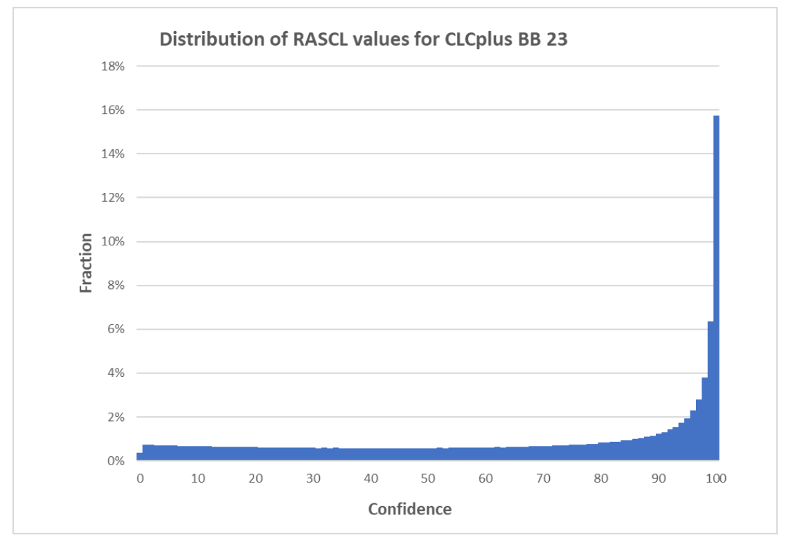

CLCplus Backbone 2023 Product User Manual
Copernicus Land Monitoring Service
Sentinel-2 time series, Land cover classification, EAGLE Land Cover Components, Raster Data Score Layer, Raster Confidence Layer, Temporal Convolutional Neural Network, Biogeographical stratification, Land Use, Land Use Change and Forestry (LULUCF), 10m spatial resolution, European Terrestrial Reference System 1989 (ETRS89)
Contact:
European Environment Agency (EEA)
Kongens Nytorv 6
1050 Copenhagen K
Denmark
https://land.copernicus.eu/
1 Executive summary
The Copernicus Land Monitoring Service (CLMS) provides geospatial information on land cover and its changes, land use, vegetation state, water cycle and Earth’s surface energy variables to a broad range of users in Europe and across the World in the field of environmental terrestrial applications. It supports applications in a variety of domains such as spatial and urban planning, forest management, water management, agriculture and food security, nature conservation and restoration, rural development, ecosystem accounting and mitigation/adaptation to climate change. CLMS is jointly implemented by the European Environment Agency (EEA) and the European Commission DG Joint Research Centre (JRC) and has been operational since 2012.
The ‘CLCplus Backbone’ constitutes the first component of the CLMS’s ‘CLCplus Product Suite’, which represents a true paradigm change in European land cover/land use monitoring, building on the rich legacy of the European CORINE Land Cover (CLC) flagship product. The CLCplus Backbone is a large scale, seamless and high-resolution inventory of European land cover. It covers the whole of EEA38 territory, the United Kingdom (UK) and the French Overseas Departments (DOMs). The CLCplus Backbone products are freely available, enabling the use by a broad audience, for a wide range of applications.
The CLCplus Backbone 2023 is a geospatial raster product containing 11 basic land cover classes and is based on a time series of high-resolution Sentinel-2 satellite imagery. The input timeseries for this 2023 production covers the reference year ± three months, i.e. 01.10.2022 to 31.03.2024, which is needed to enable the distinction of the 11 land cover classes. CLCplus Backbone maps the dominant (spatially and temporally throughout the specific reference year) land cover for each 10m-raster cell (pixel), applying specific rules according to a comprehensive decision tree. The product has first been produced for the reference year 2018, has been updated for 2021 (excluding the UK) and now as well for 2023, switching to a biennial update cycle and re-including the UK.
This main product is accompanied by three auxiliary layers. The Raster Data Score Layer provides information about the quality of the Sentinel-2 time series data by mapping the number of available cloud free acquisitions within the input time window (i.e. 2023 ± 3 months). The Raster Confidence Layer provides information about the confidence of the initial class assignment and the Raster Post-processing Layer flags all pixels, that underwent a class change during the postprocessing.
This document constitutes the Product User Manual for the CLCplus Backbone 2023. It is intended to provide all product information to users that may be required for successful furtherreaching analyses and applications. It describes the class nomenclature in detail, defining which land cover elements are included or excluded for specific classes and provides a reference to their embedding in the respective EAGLE Land Cover Components. Further, it provides the full technical specifications for the CLCplus Backbone 2023, as well as the additional products, together with discussions of the strengths and limitations of the products to be considered for any derived applications.
2 Scope of the document
This Product User Manual (PUM) is the primary document that users are recommended to read before using the CLCplus Backbone 2023 product. It provides a description of the product and layer characteristics and a guidance on lineage and usage of product. The PUM summarizes product requirements and the methodologies applied in its production. Furthermore, it provides information about expected product quality as well as information on the terms of use and product technical support.
3 Lineage of product
The CLCplus Backbone 2023 is the third product of its kind and extends the time series of the existing 2018 and 2021 products. Since the first production for the 2018 reference year the nature of the product is largely unchanged, i.e. mapping 11 land cover classes with consistent definitions in a raster at 10m spatial resolution. Nevertheless, there have been some technical changes and adaptations on the way to the most recent product update for the reference year 2023, as follows:
The time window for the Sentinel-2 input data has been shortened from 2 years for the 2018 production (i.e. 2018 ±6 months) to 1.5 years for the 2021 and 2023 productions (i.e. reference year ±3 months) to enable a timelier production that is closer to the actual reference year.
A separate technical class has been introduced for the seawater areas in the buffer around the production AOI since the 2021 production (see Section 7 and AD-1).
The United Kingdom (UK) has been excluded for the 2021 production, while it has been re-introduced in the 2023 production. The 2021 gap for the UK remains and at this stage there are no plans for post-production.
Since the 2023 reference year, the file naming has been adapted as described in Section 6.1.
The format of the product has been changed from a single pan-European mosaic to a tiled format with 100 x 100km tile size. Nevertheless, the French DOMs are still available as national mosaics.
4 Review of user requirements
The following key user requirements were considered in the concept and design of CLCplus BB. Each CLCplus Backbone production is expected to comply with these original user requirements and compliance of the product shall be ensured. User requirements may be reviewed as needed and production shall account for altered requirements where possible.
Table 1: User requirements for CLCplus Backbone (CLCplus BB) products.
| No. | Description | Comment |
|---|---|---|
| R01 | CLCplus BB must cover entire European territory | EEA38+UK, French DOMs |
| R02 | The data record offered by CLCplus BB must be seamless, complete and harmonized over the European territory. | |
| R03 | CLCplus BB must make use of state-of-the-art and technology (methodology, satellite imagery). | Sentinel-2 |
| R04 | CLCplus BB shall complement and extend the existing CLMS portfolio in a useful and efficient manner. | |
| R05 | CLCplus BB methodology and workflow must allow full-area production within one year to facilitate timely availability needed for downstream applications. | |
| R06 | CLCplus BB periodic status updates shall facilitate a consistent data record over time. | |
| R07 | CLCplus BB must at least comply with common thematic accuracy levels for large-area land cover models. | |
| R08 | CLCplus BB must be accompanied by comprehensive information that allows users to understand the accuracy of the classification. | Confidence layer |
| R09 | Product metadata of CLCplus BB must be compliant with accepted standards. | INSPIRE |
| R10 | Land cover units contained by CLCplus BB must be described with a code list and associated names | |
| R11 | CLCplus BB must have a well-documented data model and data dictionary. | EAGLE data model |
| R12 | CLCplus BB shall allow a separation of vegetation classes based and common and major structural and morphological properties. | |
| R13 | CLCplus BB must allow full integration to the database component of CLCplus Core. | |
| R14 | CLCplus BB must support independent assessments and the modelling of carbon pool dynamics in the context of the EU’s Regulation on the Inclusion of Greenhouse Gas emissions and Removals from Land use, Land Use Change and Forestry (LULUCF) by the provision of baseline geospatial inputs. |
5 Product application areas and exemplary use cases
Land cover is the result of complex interactions and dynamics between and among human activities (land use) and natural conditions (e.g. climate, biota, soil, hydrology, topography). Land cover is potentially a bulk proxy of all the processes involved. To this end, a geospatial land cover dataset at continental scale provides the baseline information to serve a diverse range of disciplines and domains. Key features of CLCplus Backbone comprise:
High-accuracy and high-detail land cover data record at continental scale,
Thematically consistent and harmonized data record,
Regular and frequent status updates,
Timely availability of status updates,
Transparent and consistent data model (EAGLE) that enables combined use with other land cover and thematic datasets, and
Open and documented production system and data quality.
From the above, CLCplus Backbone enables applications in the following domains – among others (see also Section 5.2):
Traditional land cover monitoring incl. spatial assessments and planning,
Transnational resource management (e.g. catchment hydrology) and conservation,
Environmental policy monitoring and reporting at different spatial scales,
Support to large-scale economic modelling and risk assessment (e.g. natural capital, climate vulnerability),
Model parametrization and improved spatial-temporal estimation of meteorological land surface variables.
5.1 Use case on climate change mitigation and the policy support for LULUCF via the CLCplus LULUCF Instance
Countries reporting to the United Nations Framework Convention on Climate Change (UNFCCC) must prepare annual National Inventory Reports of their greenhouse gas emissions, reporting on six land use categories (Forestland, Cropland, Grassland, Wetland, Settlements, Other land) and changes from one to the other. In addition, reporting contains detailed information on subcategories (in total: 26 classes) that exceed a threshold share of the countries’ reported greenhouse gas emissions. In the European Union, the activities are governed by the Regulation on the Inclusion of Greenhouse Gas emissions and Removals from Land Use, Land Use Change and Forestry (LULUCF) (European Commission, 2018, 2023). CLCplus Backbone supports the implementation of the LULUCF Regulation by readily providing the baseline land cover information that is ingested to the CLCplus Core database. Within CLCplus Core, CLCplus Backbone land cover and other geospatial datasets (e.g. from CLMS, national datasets) are harmonized using the EAGLE data model and combined to extract geospatial datasets with tailored thematic content at 100m. In the context of LULUCF, the derived CLCplus LULUCF Instance, serves as an operationally produced, independent geospatial proxy to LULUCF reporting from EU member states.
5.2 Thematic application areas
Environmental Monitoring:
Habitat Assessment: Conservationists and ecologists will find it useful to apply CLCplus Backbone to assess the distribution of certain habitatsthat can be related to land cover, helping to monitor their health and biodiversity.
Water Quality Assessment: CLCplus Backbone can be used to identify areas with a high risk of water pollution, such as areas of agricultural activity or urban development.
Agriculture and Forestry:
Crop Management: Farmers and agricultural researchers can use CLCplus Backbone to monitor and relate land cover information to aspects of land management and potentially land use and to assess e.g. the suitability of land for specific crops.
Forest Management: Foresters can use CLCplus Backbone to monitor the patterns and extent of different basic tree covers, aiding in sustainable forestry practices and combating illegal logging.
Natural Disaster Management:
Flood Risk Assessment: CLCplus Backbone can help to identify flood-prone areas and design flood mitigation strategies.
Wildfire Risk Assessment: CLCplus Backbone may be useful to assess the risk of wildfires by identifying landscape patterns of vegetation structure or urban-rural interfaces.
Climate Change Studies:
Carbon Sequestration: Researchers can use CLCplus Backbone to estimate the potential for carbon sequestration in different land cover types, aiding in climate change mitigation efforts.
Climate Adaptation: Urban heat island studies will benefit from CLCplus Backbone to analyse the impact of land cover on local temperatures and recommend adaptation strategies in cities.
Infrastructure Development:
Energy Planning: CLCplus Backbone can help energy companies and communities to identify suitable areas for renewable energy projects such as wind farms and solar installations.
Industrial Site Selection: Businesses and communities could use CLCplus Backbone to assist assessments on the suitability of locations for industrial facilities based on land cover and other data sources.
Tourism and Recreation:
Tourism Planning: Tourism agencies may find CLCplus Backbone useful to identify areas of natural beauty or recreational value, helping to promote tourism and outdoor activities.
Nature Conservation: Conservation organizations can use CLCplus Backbone to identify and protect areas of ecological importance.
Research and Education:
Academic Research: Researchers across various disciplines will befit from CLCplus Backbone to study land cover dynamics and their implications for the environment and society.
Educational Tools: CLCplus Backbone aims to be comprehensive for everyone and can thus support educational materials and tools to raise awareness about land-related topics and phenomena as well as environmental concepts.
6 Product description
The CLCplus Backbone 2023 product comprises an updated layer of the main land cover raster layer, as well as three auxiliary layers (see Figure 1).

The following subchapters describe each of the layers, including detailed technical specifications.
6.1 CLCplus Backbone 2023 Raster
The following chapter describes the CLCplus Backbone 2023 raster layer (RAS), its technical specifications (Section 6.1.1), as well as the nomenclature (Section 6.1.2), the decision tree for the class assignment (Section 6.1.3) and provides some examples for the class assignment (Section 6.1.4).
The CLCplus Backbone 2023 is a 10m pixel-based land cover map (see Figure 2) based on Sentinel-2 (S-2) data for the reference year 2023 ±3 months. The product has no defined MMU but maps the dominant land cover among 11 thematic land cover classes (see Table 2) for individual raster cells (i.e. 1 pixel = 10 x 10m = 100m²). The applied class nomenclature is based on the EAGLE Land Cover Components (LCC), whereas there are slight deviations for some classes, as described in detail in Section 6.1.2 CLCplus Backbone 2023 is available for the territory of the 38 EEA member and cooperating countries and the United Kingdom (i.e. EEA38 + UK), including the French DOMs, and maps an area of approximately 6 million km².


6.1.1 Technical specifications of CLCplus Backbone 2023
Download content
CLCplus Backbone 2023 is available as 100 x 100km tiles, based on the EEA grid. Each of the tiles has a unique identifier, referring to its spatial extent (e.g. ‘E44N36’). In total, the EEA38+UK is represented by 897 raster tiles, each of them accompanied by an INSPIRE compliant metadata file (.xml) and an attribute table in aux.xml format. For tile E44N36 for example the following files are available:
Raster classification file:
- CLMS_CLCPLUS_RAS_S2023_R10m_E44N36_03035_V01_R00.tif
Attribute table file:
- CLMS_CLCPLUS_RAS_S2023_R10m_E44N36_03035_V01_R00.tif.aux.xml
Metadata file:
- CLMS_CLCPLUS_RAS_S2023_R10m_E44N36_03035_V01_R00.xml
Additionally, symbology files in .lyr, .qml and .sld are available in order to ease the visualization in specific software applications.

Figure 3 displays a single tile (E44N36) of the CLCplus Backbone 2023, showing the area around Copenhagen. Besides the tiles for the EEA38+UK extent, the CLCplus Backbone 2023 is available in the national projections for the French DOMs.
File naming convention
The filenames for the CLCplus Backbone 2023 are composed of the following elements:
Prefix_DataTheme_DataSub-Theme_TemporalReference_DataTypeSpatialResolution_SpatialExtent_EPSGCode_VersionNumber_RevisionNumber
➔ CLMS_CLCPLUS_RAS_S2023_R10m_EXXNXX_03035_V01_R00
Where:
| Prefix: CLMS | SpatialResolution (SpatialResolutionUnit): 10m |
| DataTheme: CLCPLUS | SpatialExtent: EXXNXX or GF, GP, MQ, RE, YT for French DOMs |
| DataSub-Theme: RAS | EPSGCode: 03035 (or EPSG codes for national projections of DOMs) |
| TemporalReference: S2023 | VersionNumber: V01 |
| DataType: R; V | RevisionNumber: R00 |
The product specifications for the CLCplus Backbone for the reference year 2023 are summarized in Table 3. Further product details and information on nomenclature etc. can be found in the following sub-sections.
Technical specifications of the CLCplus Backbone.
Name: CLCplus Backbone Raster
Acronym: RAS
Product family: CLMS_CLCplus
Summary: CLCplus Backbone is a spatially detailed, large scale, EO-based land cover inventory. The CLCplus Backbone RAS layer is a 10m pixel-based land cover map based on a Sentinel-2 time series from October 2022 to March 2024 and auxiliary features. For each pixel it shows the dominant land cover among the 11 basic land cover classes.
Reference year: 2023
Geometric resolution: Pixel resolution 10m x 10m, fully conform with the EEA reference grid
Coordinate Reference System: European ETRS89 LAEA projection / WGS84 and the respective UTM zone for French DOMs
Coverage: 6.002.105 km² (covering the full EEA38 + UK)
Geometric accuracy (positioning scale): Equals Sentinel-2 positional accuracy in 2023 (<9m at 95.5 % confidence level)
Thematic accuracy: 90 % overall accuracy, not more than 15 % omission errors and 15 % commission errors per class (the amount of omission and commission errors for particular difficult classes such as Low-growing woody plants and Lichens and Mosses might regionally exceed those thresholds)
Data type: 8bit unsigned raster with LZW compression
Minimum Mapping Unit (MMU): Pixel-based (no MMU)
Necessary attributes: Value, Count, Class_name, Area_km2, Area_perc
Raster coding (thematic pixel values):
1: Sealed
2: Woody needle leaved trees
3: Woody broadleaved deciduous trees
4: Woody broadleaved evergreen trees
5: Low-growing woody plants
6: Permanent herbaceous
7: Periodically herbaceous
8: Lichens and mosses
9: Non and sparsely vegetated
10: Water
11: Snow and ice
253: Coastal seawater buffer
254: Outside area
255: No data
Metadata: XML metadata files according to INSPIRE metadata standards
Delivery format: Cloud optimized GeoTIFFs as 100x100km tiles incl. pyramids and embedded colour map (.tif), attribute table (.aux.xml), and INSPIRE-compliant metadata in XML format (*.xml)
6.1.2 Nomenclature concept and class definitions
Most of the class definitions for the CLCplus Backbone 2023comprise a 50% area threshold to express that the dominant land cover should be assigned. While this is a plausible approach there are many situations where the land cover within a single 10m pixel comprises a spatial mix of different classes and no single class reaches an absolute majority of 50%. A simple example is provided in Figure 4.

To address this issue, a relative majority is used in most cases for the class assignment. This logic is implemented in detail through a decision tree approach (see Figure 6) which does not only define the area threshold but further clarifies and limits for each class the EAGLE Land Cover Component (see Figure 5) and EAGLE Land Characteristics (LCH, where needed) considered with the evaluation of the area threshold. The approach is detailed in Section 6.1.3. In general, the area fractions of different land cover classes are to be understood as what can be reasonably evaluated in HR and VHR remote sensing imagery at nadir.

Remark on the temporal dimensions of the land cover classes: In cases of land cover changes during the reference year and unless stated otherwise in the class definitions below (i.e. Permanent herbaceous vs. Periodically herbaceous, Snow and Ice), the dominant land cover (i.e. present >6 months per year) shall be mapped.
Textual descriptions of the main land cover components and land characteristics included in each of the 11 classes are provided in the following paragraphs and respective area thresholds are explained in more detail in Section 6.1.3.
- Sealed (CLCplus BB class code 1; EAGLE LCC 1.1.1 Sealed Artificial Surfaces and Constructions)
Sealed artificial surfaces include all impervious and sealed surfaces that are covered mainly by features with a specific height above ground (buildings and artificial constructions) or features without a specific height above ground (flat impervious surfaces). Flat surfaces covered by any type of impervious material that is used for artificial surface pavements (e.g. asphalt, concrete, tarmacadam).
Includes: All sealed artificial surfaces and constructions including Buildings, Specific structures and facilities, and open sealed surfaces (in accordance with respective EAGLE LCC). Also vegetated rooftops are to be mapped under this class. Deviating from the EAGLE LCC 1.1.1.3, railway tracks are also considered as part of this class since they typically comprise impervious structural elements (which makes them spectrally hardly separable) and a highly compacted subsoil. Further elements to be included are permanent and temporary (foil covered) greenhouses (if present for more than 50% of the reference year) and solar parks (if applicable, considering the area threshold).
Excludes: Waste materials (e.g. communal / industrial waste), non-sealed and semisealed artificial surfaces (e.g. natural materials displaced from original place, artificially consolidated, e.g. logistic and storage areas, festive squares, non-vegetated sport fields, grass pavers, permeable paving. Such areas are to be mapped as Non- and sparselyvegetated since biotic land cover components do typically not exceed 30%.
- Woody – trees
Perennial woody plants with single, self-supporting main stem or trunk, containing woody tissue and branching into smaller branches and shoots.
| Excluded | Destination class |
|---|---|
| Pinus mugo and Alnus viridis | Low-growing woody plants |
| Ephedra | Low-growing woody plants |
| Shrub forms of Taxus, Juniperus and Betula | Low-growing woody plants |
| Musa | Permanent herbaceous |
2.1. Woody needle leaved trees (CLCplus BB class code 2; EAGLE LCC 2.1.1, LCH 3.1.1)
Needle leaved trees: referring to trees of the botanical group Gymnospermae (Ford-Robertson, 1971) carrying typical needle-shaped leaves. An exception is Ginkgo biloba which belongs to the Gymnospermae but is considered here as Broadleaved deciduous tree.
2.2. Broadleaved trees (see BB classes below): referring to trees of the botanical group Angiospermae, with the exception of ginkgo (Ginkgo biloba), which belongs to the Gymnospermae taxonomically:
2.2.1 Woody broadleaved deciduous trees (CLCplus BB class code 3; EAGLE LCC 2.1.1, LCH 3.2.2): broadleaved trees which are leafless for a certain period of the year;
2.2.2 Woody broadleaved evergreen trees (CLCplus BB class code 4; EAGLE LCC 2.1.1, LCH 3.2.1): trees that are never entirely without green foliage (includes palm-leaved species).
- Low-growing woody plants (CLCplus BB class code 5; EAGLE LCC 2.1.2 Bushes, Shrubs)
Perennial woody plants with shrub growth form, i.e. multiple stems arising at or near the base, and height usually less than 5 metres. Leaf type can be needle leaf, broadleaf or palm leaf, phenology is either evergreen or deciduous, and leaf surface type can be regular or sclerophyllous.
Includes: regular bushes and dwarf shrubs, species such as Pinus mugo, Alnus viridis, shrub forms from the genus Ephedra, Taxus, Juniperus and Betula, and subshrubs such as Thymus spec., Salvia, Rosmarinus, Calluna vulgaris, Erica spec. The class also includes Vitis spec. and Humulus spec., which are typically permanent crops, as well as Opuntia ficus-indica. Individual small trees in shrub-dominated areas are allowed in this class.
Excludes: Low-growing fruit trees (e.g. apple plantations), tree cover regrowth (e.g. after clear cuts) with sufficient density and trees in nurseries, which should be classified according to the definitions for Woody-trees (i.e. CLCplus codes 2, 3 and 4).
Remark: Due to the difficulty of differentiating class 5 Low-growing woody plants from woody trees (class 2 Woody needle leaved trees, class 3 Woody broadleaved deciduous trees or class 4 Woody broadleaved evergreen trees) and herbaceous vegetation (class 6 Permanent herbaceous or class 7 Periodically herbaceous), the accuracies could be regionally below the defined target accuracies.
- Permanent herbaceous (CLCplus BB class code 6; EAGLE LCC 2.2 Herbaceous Vegetation)
Permanent herbaceous areas are characterized by a continuous vegetation cover (i.e. >30%areal cover) throughout a year. No bare soil occurs within a year. These areas are either unmanaged or extensively managed natural grasslands or permanently managed grasslands, or arable areas with a permanent vegetation cover (e.g. fodder crops) or even set-aside land in agriculture. For managed grasslands, the biomass will vary over the year, depending on the number of mowing (grassland cuts) or grazing events. The class includes regular graminaceous (grasses), reeds and forbs, notably also natural dry grassland in Southern, South-Eastern Europe and Turkey, as well as banana plantations (Musa spec.).
Remark: According to the Integrated Administration and Control System (IACS) and the Land Parcel Identification System (LPIS), permanent and managed grassland may be ploughed every 3-5 years for amelioration purposes followed by an artificial seeding phase and a renewal of vegetation cover, thus potentially showing a phase of bare soil within a time frame of 5-6 years. Given that the observation period considered for the CLCplus Backbone is 1.5 years and its focus is on land cover, such longer-term land use patterns cannot be considered and therefore grasslands which underwent ploughing within the reference year are typically mapped as class 7 Periodically herbaceous.
- Periodically herbaceous (CLCplus BB class code 7; EAGLE LCC 2.2 Herbaceous Vegetation)
Periodically herbaceous areas are characterized by at least one land cover change between bare soil and herbaceous vegetation within the observation period. Depending on the prevailing management intensities, these areas can also have more than one land cover change within the observation period. In many cases, the areas mapped under class 7 are managed arable lands.
- Lichens and mosses (CLCplus BB class code 8; EAGLE LCC 2.4 Lichens, Mosses, Algae)
Any type of lichens: composite organisms formed by a symbiotic relationship of a fungus and a photosynthetic partner (usually green algae or cyanobacteria);
Mosses: Non-vascular plants in the land plant division Bryophyta. They are small (a few centimetres tall) herbaceous (non-woody) plants that absorb water and nutrients mainly through their leaves and but also photosynthesis;
Typical vegetation class of northern European Tundra vegetation.
Remark: The mapping of this class is focused on larger areas in northern Europe where sufficient in situ data is available. Due to the difficulty to distinguish Lichens and Mosses from herbaceous vegetation and dwarf shrubs lower accuracies for this class are to be expected.
- Non and sparsely vegetated (CLCplus BB class code 9; EAGLE LCC 1.2 Natural Material Surfaces; EAGLE LCC 1.1.2 Non-Sealed Artificial Surfaces)
Contains consolidated and unconsolidated materials as well as permanent bare soils, where non-vegetated areas cover ≥70% of the land surface, such as:
Consolidated surfaces (rocks):
The rock surface is largely continuous except individual cracks in the consolidated material. Some areas may be covered by shallow layers of soil or there could be isolated pockets of soil or a mixture of both;
Examples: solid (closed) rock formations, fresh lava flows, quarries, mineral extraction sites, open pit mines.
Unconsolidated surfaces (screes, sand, permanent bare soil):
Mineral fragments are the result of physical and chemical disintegration and the processes involved most often cover geological timespans under natural conditions. The contained materials accumulate on site due to sedimentary processes and/or human activity;
Includes variable particle sizes: boulders, stones, pebble, gravel, sand and clay
Examples of typical formations: mountain slope debris, gravel riverbanks, open pit pebble mining of fossil riverbanks or fluvial sediments, volcanic lapilli fields, sand dunes, sand beaches, river sand banks, volcanic ash.
Permanent bare soil:
- Mixture of mineral and organic material that is fertile enough and capable of sustaining plant life but continuously un-vegetated during the entire observation period.
Sparsely vegetated areas:
- Sparsely vegetated on unstable areas (stones, boulders, rubble on steep slopes, or anthropogenic activity), due to harsh environmental conditions or anthropogenic interference. Vegetation covers <30% of the area.
Any other non-sealed artificial surfaces and constructions with a vegetation cover <30%.
Organic and in-organic deposits with a vegetation cover <30%.
- Water (CLCplus BB class code 10; EAGLE LCC 3.1 Liquid Water Bodies)
Inland water in liquid state of aggregation, regardless of its shape, salinity and origin (natural or artificial);
Includes: running water (water courses) and standing water (natural lakes, fishponds, man-made reservoirs, pools, irrigation ponds, etc.);
Excludes: Seawater that is included in a buffer around the coastline. All water pixels beyond the coastline are classified as “coastal seawater buffer” (class code 253). This distinction is made to enable the derivation of reliable water statistics, especially for countries with long coastlines, where the area of seawater would distort any derived water statistics, otherwise. For more details on the methodology for the coastal seawater buffer derivation see AD-1.
Remark: Regarding the temporal coverage the area should be under water at least 50% of the observation period; temporary ice cover of water bodies is included.
- Snow and ice (CLCplus BB class code 11; LCC 3.2 Solid Waters)
Snow: areas covered permanently (>90% of observation period) with snow throughout the year;
Ice: persistent ice cover formed by accumulation of snow (up to 100% of observation period);
and combinations of both (e.g. in case of glaciers being covered by snow for parts of the year).
6.1.3 Decision tree for area thresholds
The CLCplus Backbone decision tree (Figure 6) complements the class definitions in Section 6.1.2 and the EAGLE LCC matrix (cf. Figure 5), to ensure a seamless definition of the classes not only for ‘pure’ pixels, but also in cases of mixed land cover at the scale of the product’s 10m spatial resolution. At each decision level in Figure 6, the decision tree defines the reference area which should be considered (blue text next to the rhombus) and the area threshold for a specific land cover class as percentage of the reference area (white text in rhombus). Generally, the decision tree targets to define an unambiguous assignment of pixels with (pure or) mixed land cover to the dominant land cover class. In accordance with the EAGLE concept, it refers to the dominant land cover independent of the land use. Pixels which are for example dominated by Permanent herbaceous (class 7) land cover should be considered as such, even though the dominant land use might be an orchard, fruit plantation or Dehesa. Further examples are given in Section 6.1.4.

6.1.4 Examples for class assignment
Some concrete examples for the usage of the decision tree are provided in the following:
Example 1 – Hypothetical example, considering the mix which was already presented in Figure 4:

Does Water cover more than 50% (considering the area sum of Water AND Biotic AND Abiotic)? > NO
Does Biotic cover more than 50% (considering the area sum of Biotic AND Abiotic)? > YES
Does Woody cover more than 50% (considering the area sum of Biotic)? > NO
Does Herbaceous vegetation cover more than 50% (considering the area sum of Not Woody vegetation)? > YES
Does Periodically herbaceous cover more than 50% (considering the area sum of Herbaceous vegetation)? > NO
Does Permanent herbaceous cover more than 50% (considering the area sum of Herbaceous vegetation)? > YES
Permanent herbaceous
Example 2 – Real world example extracted from Figure 7 (Row 2, Column 5):

Does Water cover more than 50% (considering the area sum of Water AND Biotic AND Abiotic)? > NO
Does Biotic cover more than 50% (considering the area sum of Biotic AND Abiotic)? > NO
Does Sealed cover more than 50% (considering the area sum of Abiotic)? > NO
Does Biotic cover more than 30% (considering the area Sealed: 0 m²sum of Biotic and Abiotic)? > NO
Example 2 illustrates the application of the decision tree over an area with olive groves in Southern Spain. Since the growth of the understorey is largely suppressed (tillage and use of herbicides are common) and the tree cover is relatively sparse, the Biotic coverage percentage for most pixels does not exceed the 30% threshold and the pixel should hence be considered as Non- and sparsely-vegetated (class 9). In cases where the suppression of the herbaceous understorey is not continuous (i.e. alteration between herbaceous cover and bare soil within one year), such areas should be mapped as Periodically Herbaceous instead.
As illustrated in Figure 7, the same will apply for wide areas where such land cover characteristics are dominant, in line with the key paradigm of the EAGLE concept to disentangle land cover and land use.

Example 3 below (Figure 8) shows the map result for a rural area in France, illustrating some interruptions of small linear landscape elements (rural road in this case). The apparent omission of such narrow linear elements (e.g. narrow roads and water courses, narrow tree lines and hedge rows) is a common feature of the CLCplus Backbone, since a) such narrow landscape elements do often not occupy the majority of the pixels and b) are registered in the time series with a mixed spectral signal due to the sensor point spread function and imprecisions in the multi-temporal spatial co-registration.
Example 4 (Figure 9) illustrates the largely correct mapping of an area with sparse coniferous tree cover and herbaceous understorey as class 6 (Permanent herbaceous). While the mapping of such mixed areas might be unexpected for some users and might not be reflected in national or regional land cover maps, it correctly represents the dominant land cover and its spectraltemporal properties.
Example 5 concerns the mapping of the classes Water and Snow and Ice, which are defined according to their spatial-temporal extent throughout the reference year, with at least 50% spatial coverage and 90% permanence within the period. As illustrated in Figure 10 and Figure 11, the production has taken these thresholds into account, considering temporal profiles of the Normalized Difference Vegetation Index (NDVI) and Normalized Difference Snow Index (NDSI) during the generation of training data, quality control and internal verification. It is therefore important to note that single satellite images at deliberate times can suggest different spatial extents for these two classes, depending on the time of acquisition. Time-series should be consulted for assessing the correctness of the class extents of water or snow/ice in CLCplus Backbone products.
Example 6 (Figure 12) illustrates the correct mapping of agricultural parcels in the Mediterranean as class Non- and sparsely vegetated as suggested from the underlying NDVI time series, i.e. the absence of cultivation (and irrigation) during the main growing season (here: October - July). The contrast is particularly clear, when compared with the temporal trajectory of neighbouring parcels, which were cultivated in the growing season (Figure 12).


Example 7 (Figure 13) illustrates the mapping of dry grasslands (widespread in Southern Europe and Turkey) as class Permanent herbaceous. Though the vegetation signal is rather subtle, when compared to Permanent herbaceous for example in Central Europe, it is still sufficient to correctly distinguish such areas from class Non- and sparsely vegetated areas in those regions. In the given example the area, classified as Non- and sparsely vegetated is characterized by an NDVI, being constantly below 0.2, while the Permanent herbaceous area slightly exceeds this value for a certain part of the year, peaking around 0.3.

Example 8 (Figure 14) illustrates uncertainties in the mapping of intensively managed grassland (e.g. fodder crops) as either class Permanent herbaceous or class Periodically herbaceous. While the exposure of bare soil within the reference years can be clearly detected in most ploughed parcels (i.e. to be mapped as Periodically herbaceous), there can be border cases where drought events and mowing events under rather dry conditions are not fully distinguishable from a bare soil exposure.

Example 9 (Figure 15) illustrates the challenges associated with the mapping of the class Lowgrowing woody plants (bushes, shrubs) versus tree classes. The main defining characteristics for the class Low-growing woody plants comprise the habitus (i.e. growth forms with multiple stems emerging from the ground) and the typical height (i.e. below 5m), both of which are criteria which are typically difficult to evaluate from Sentinel-2 time series alone. While the spectraltemporal signature of shrubs allows a distinction from other land cover types to some degree (e.g. vineyards), there are many cases where this is less obvious. Typical regional examples comprise sparse woody canopies in Nordic countries with mixtures of shrubs and trees even at the species level, the Mediterranean Macchia where shrubs and trees can co-occur or heathlands with mixtures of dwarf shrubs and herbaceous species.

Example 10 (Figure 16) illustrates the typical similarity between surfaces covered by class Lichens and mosses versus areas of class Non and sparsely vegetated with some fractions of sparse herbaceous vegetation. Both land cover compositions occur in the same biogeographic regions and are nearly indistinguishable in VHR imagery or NDVI time-series. In areas, where street view imagery and auxiliary data sources are available, it is possible to map and verify larger occurrences of this class, however, large uncertainties remain, in remote areas with no or little adequate reference data.

6.2 Auxiliary layers
The CLCplus Backbone raster classification layer (RAS) is accompanied by three auxiliary layers, which are described in the following subsections. For more information on the methodologies applied in creation of the auxiliary layers please refer to the Algorithm Theoretical Basis Document AD-1.
6.2.1 Raster Data Score Layer
The Data Score Layer (RASDL) quantifies the number of available observations in the Sentinel-2 (S-2) data time series, which was used as input for the CLCplus Backbone classification approach. The RASDL is therefore a basic quality indicator of the input time series for the raster classification.

The clearly visible stripe patterns (see Figure 17) from SW to NE correctly represent the different data quantities between the overlapping areas of the S-2 swaths. Besides this normal general pattern of the RASDL, there are some patterns that are worth further explaining: S-2 GRANULE overlaps are often visible as horizontal and vertical stripes with slightly higher observation counts. This is because there is a higher chance in the overlap areas that one of the GRANULES fulfils the cloud cover threshold used in scene selection.
File naming convention
The filenames for the Raster Data Score Layer are composed of the following elements:
Prefix_DataTheme_DataSub
Theme_TemporalReference_DataTypeSpatialResolution_SpatialExtent_
EPSGCode_VersionNumber_RevisionNumber
➔ CLMS_CLCPLUS_RASDL_S2023_R10m_EXXNXX_03035_V01_R00
Where:
| Prefix: CLMS | SpatialResolution (SpatialResolutionUnit): 10m |
| DataTheme: CLCPLUS | SpatialExtent: EXXNXX or GF, GP, MQ, RE, YT for French DOMs |
| DataSub-Theme: RASDL | EPSGCode: 03035 (or EPSG codes for national projections of DOMs) |
| TemporalReference: S2023 | VersionNumber: V01 |
| DataType: R; V | RevisionNumber: R00 |
The product specifications for the CLCplus Backbone RASDL layer are summarized in Table 4.
Technical specifications of the Raster Data Score Layer:
Name: CLCplus Backbone Raster Data Score Layer
Acronym: RASDL
Product family: CLMS_CLCplus
Summary: The Data Score Layer is a 10m pixel-based auxiliary layer for the CLCplus Backbone RAS. It is based on a filtered Sentinel-2 time series from October 2022 to March 2024 and auxiliary features.
Reference year: 2023
Geometric resolution: Pixel resolution 10m x 10m, fully conform with the EEA reference grid
Coordinate Reference System: European ETRS89 LAEA projection / WGS84 and the respective UTM zone for French DOMs
Coverage: 6.002.105 km² (covering the full EEA38 + UK)
Geometric accuracy (positioning scale): equals the Sentinel-2 positional accuracy in 2023 (<9m at 95.5% confidence)
Data type: 16bit unsigned raster with LZW compression
Minimum Mapping Unit (MMU): Pixel-based (no MMU)
Necessary attributes: Value, Count, Obs_count
Raster coding:
0-200: Valid observations count
65535: Outside area
Metadata: XML metadata files according to INSPIRE metadata standards
Delivery format: Cloud optimized GeoTIFFs as 100x100km tiles incl. pyramids and embedded colour map (.tif), attribute table (.aux.xml), and INSPIRE-compliant metadata in XML format (*.xml)
6.2.2 Raster Confidence Layer
The Raster Confidence Layer (RASCL) holds information on the confidence of the classifier in the class assignment of each 10m pixel. The higher the confidence value, the more reliable the class assignment for a pixel, the lower the confidence value the more uncertain it is. The value range of RASCL is 0-100.
Figure 18 shows the RASCL for the reference year 2023 for EEA38 + UK. The partially visible edges (see closeup in Figure 19) are the result of different regional classification model trainings for adjacent Production Units (see Section 7.2), where the distribution of the probabilities is different according to actual regional differences in the present land cover. In general, areas with lower confidence are typically concentrated in transition areas between different land cover types or biogeographical transition areas, with a higher degree of mixed spectral-temporal signatures from mixed land cover types.



The distribution of the raster confidence values is displayed in Figure 20. It shows a significant increase of confidence values from approximately 90% upwards. Overall, approximately 69% of all classified pixels were assigned to the respective dominant class (out of max. 11 classes) with a confidence of ≥50%. Considering the classifier’s general difficulty to distinguish between up to 11 classes (depending on the present land cover in the respective regions), this shows that the classifier was able to draw on a sufficiently large data and sample basis, to resolve most uncertainties in the class assignment. While this measure of uncertainty is not always a good proxy for the distribution of errors (i.e. in case of spectral-temporal similarity, the classification can still commit an error with high confidence), it is worth noting that areas with lower confidence generally coincide with areas where land cover classification is generally more difficult, e.g. due to very dry conditions, short vegetation periods, or generally high cloud cover (i.e. Southern Europe, Norway and Iceland).
File naming convention
The filenames for the CLCplus Backbone Raster Confidence Layer (RASCL) are composed of the following elements:
Prefix_DataTheme_DataSub-Theme_TemporalReference_DataTypeSpatialResolution_SpatialExtent_EPSGCode_VersionNumber_RevisionNumber
➔ CLMS_CLCPLUS_RASCL_S2023_R10m_EXXNXX_03035_V01_R00
Where:
| Prefix: CLMS | SpatialResolution (SpatialResolutionUnit): 10m |
| DataTheme: CLCPLUS | SpatialExtent: EXXNXX or GF, GP, MQ, RE, YT for French DOMs |
| DataSub-Theme: RASCL | EPSGCode: 03035 (or EPSG codes for national projections of DOMs) |
| TemporalReference: S2023 | VersionNumber: V01 |
| DataType: R; V | RevisionNumber: R00 |
The product specifications for the RASCL are summarized below.
Technical specifications of the CLCplus Backbone Raster Confidence Layer.
Name: CLCplus Backbone Raster Confidence Layer
Acronym: RASCL
Product family: CLMS_CLCplus
Summary: The Confidence Layer is a 10m pixel-based auxiliary layer for the CLCplus Backbone RAS. It provides information about the reliability of the land cover class assignment per pixel.
Reference year: 2023
Geometric resolution: Pixel resolution 10m x 10m, fully conform with the EEA reference grid
Coordinate Reference System: European ETRS89 LAEA projection / WGS84 and the respective UTM zone for French DOMs
Coverage: 6.002.105 km² (covering the full EEA38 + UK)
Geometric accuracy (positioning scale): equals the Sentinel-2 positional accuracy in 2023 (<9m at 95.5% confidence)
Data type: 8bit unsigned raster with LZW compression
Minimum Mapping Unit (MMU): Pixel-based (no MMU)
Attributes: Value, Count, Confidence
Raster coding:
0-100: Confidence values
254: Outside area
Metadata: XML metadata files according to INSPIRE metadata standards
Delivery format: Cloud optimized GeoTIFFs as 100x100km tiles incl. pyramids and embedded colour map (.tif), attribute table (.aux.xml), and INSPIRE-compliant metadata in XML format (*.xml)|
6.2.3 Raster Post-processing Layer
The Raster Post-Processing Layer (RASPL) provides the information, if a pixel’s class has been changed during the post-processing (more detailed info provided in AD-1).
The RASPL for the CLCplus Backbone 2023 is shown in Figure 21. The green areas represent these re-coded and thus improved areas. The post-processing rulesets were intentionally tailored to be rather conservative and introduce adaptations only where auxiliary layers provide very reliable information. This is reflected in the very small fraction of pixels that underwent automated corrections (0.03%) during the post-processing.

File naming convention
The filenames for RASPL are composed of the following elements:
Prefix_DataTheme_DataSub- Theme_TemporalReference_DataTypeSpatialResolution_SpatialExtent_ EPSGCode_VersionNumber_RevisionNumber
➔ CLMS_CLCPLUS_RASPL_S2023_R10m_EXXNXX_03035_V01_R00
Where:
| Prefix: CLMS | SpatialResolution (SpatialResolutionUnit): 10m |
| DataTheme: CLCPLUS | SpatialExtent: EXXNXX or GF, GP, MQ, RE, YT for French DOMs |
| DataSub-Theme: RASPL | EPSGCode: 03035 (or EPSG codes for national projections of DOMs) |
| TemporalReference: S2023 | VersionNumber: V01 |
| DataType: R; V | RevisionNumber: R00 |
The product specifications for the CLCplus Backbone Raster Post-Processing Layer (RASPL) are below.
Technical specifications of the Raster Post-Processing Layer:
Name: CLCplus Backbone Raster Post-Processing Layer
Acronym: RASPL
Product family: CLMS_CLCplus
Summary: The Post-Processing Layer is a 10m pixel-based auxiliary layer for the CLCplus Backbone RAS. It provides information of pixels that were re-coded during post-processing of the raster classification.
Reference year: 2023
Geometric resolution: Pixel resolution 10m x 10m, fully conform with the EEA reference grid
Coordinate Reference System: European ETRS89 LAEA projection / WGS84 and the respective UTM zone for French DOMs
Coverage: 6,002,168 km² (covering the full EEA38 + UK)
Geometric accuracy (positioning scale): equals the Sentinel-2 positional accuracy in 2023 (<9m at 95.5% confidence)
Data type: 8bit unsigned raster with LZW compression
Minimum Mapping Unit (MMU): Pixel-based (no MMU)
Raster coding:
0: No change during post-processing
1: Recoded during post-processing
254: Outside area
Attributes: Value, Count, Class_name
Metadata: XML metadata files according to INSPIRE metadata standards
Delivery format: Cloud optimized GeoTIFFs as 100x100km tiles incl. pyramids and embedded colour map (.tif), attribute table (.aux.xml), and INSPIRE-compliant metadata in XML format (*.xml)
7 Product methodology and workflow
This section provides a brief overview on the implemented methodology. For full detail on the input data used and the single processing steps, please refer to the Algorithm Theoretical Basis Document AD-1.
7.1 Input data
The main input data source for the raster classification is Sentinel-2 time-series data covering the reference year ±3 months. Initially, all Sentinel-2 scenes at L2A (i.e. at-surface reflectance) and with a cloud coverage lower than 80% are fed into the production chain. More specifically the Sentinel-2 bands B1, B3, B4, B5, B8, B9, B11, B12 and four derived spectral indices, i.e. the NDVI, the Normalized Difference Water Index (NDWI), the Normalized Difference Moisture Index (NDMI) and the Normalized Burnt Ratio (NBR) are used.
The training and test data, required for the model calibration, is based on the sample data base (Sample DB) from the initial CLCplus Backbone 2018 production and updated with every subsequent production to account for changes over time. In total, more than 1 million sample point are used for CLCplus Backbone production.
7.2 Production units
Considering the diversity of the European landscapes and to ensure high-accuracy mapping within CLCplus Backbone, all main processing steps, such as algorithm training, testing or final land cover classification, are performed along substrata. These substrata are based on biogeographical regions (Metzger et al. 2013) and further consider roughly the national boundaries (with regards to prioritized production of the EU27) as well as a maximum size for processing efficiency. The entire production area (EEA38+UK and French DOMs) is stratified into 138 substrata, the Production Units (PU).
7.3 Time series classification
The time series classification comprises three main steps, i.e. the time series extraction, the classification model training and the roll out of the trained model, computing the actual land cover classification.
The classifier used is a Temporal Convolutional Neural Network (TempCNN) classifier, which is a state-of-the-art classifier for satellite image time series analysis and outperforms other algorithms, such as Recurrent Neural Networks (RNNs), as described in Pelletier et al. (2019).
7.4 Post-processing
The post-processing steps comprise 1) bilateral filtering of the class probabilities, 2) blending of the probabilities along production unit borders and 3) a cross-calibration with the class probabilities from the previous 2018 and 2021 productions to ensure best possible product consistency. The cross-calibration still allows for changes in the land cover, where there has indeed been a change, as well as for enhancements and correction of areas with lower accuracy in previous productions. Further optional post-processing is applied to areas with remaining issues. As a last post-processing step, the coastal water area is recoded to separate it from the inland water (i.e. auxiliary class 253).
8 Terms of use and product technical support
8.1 Terms of use
The Terms of Use for the product(s) described in this document acknowledge the following:
Free, full and open access to the products and services of the Copernicus Land Monitoring Service is made on the conditions that:
When distributing or communicating Copernicus Land Monitoring Service products and services (data, software scripts, web services, user and methodological documentation and similar) to the public, users shall inform the public of the source of these products and services and shall acknowledge that the Copernicus Land Monitoring Service products and services were produced “with funding by the European Union”.
Where the Copernicus Land Monitoring Service products and services have been adapted or modified by the user, the user shall clearly state this.
Users shall make sure not to convey the impression to the public that the user’s activities are officially endorsed by the European Union.
The user has all intellectual property rights to the products he/she has created based on the Copernicus Land Monitoring Service products and services.
Consult Data policy — Copernicus Land Monitoring Service for further details.
8.2 Citation
When planning a publication (scientific, commercial, etc.), it shall explicitly mention:
“This publication has been prepared using European Union’s Copernicus Land Monitoring Service information; <insert all relevant DOI links here, if applicable>”
When developing a product or service using the products or services of the Copernicus Land Monitoring Service, it shall explicitly mention:
“Generated using European Union’s Copernicus Land Monitoring Service information;<insert all relevant DOI links here, if applicable>”
When redistributing a part of the Copernicus Land Monitoring Service (product, dataset, documentation, picture, web service, etc.), it shall explicitly mention:
“European Union’s Copernicus Land Monitoring Service information; <insert all relevant DOI links here, if applicable>”
Consult Data policy — Copernicus Land Monitoring Service for further details.
8.3 Product technical support
Product technical support is provided by the product custodian through Copernicus Land Monitoring Service – Service desk. Product technical support does not include software specific user support or general GIS or remote sensing support.
More information on the products can be found on the Copernicus Land Monitoring Service website (https://land.copernicus.eu/).
9 List of abbreviations & acronyms
| Abbreviation | Name | Reference |
|---|---|---|
| AD | Applicable Document | |
| AOI | Area of Interest | |
| BB | (Corine Land Cover plus) Backbone | |
| CLC | CORINE Land Cover | |
| CLCplus | CORINE Land Cover plus | |
| CLMS | Copernicus Land Monitoring Service | https://land.copernicus.eu/en |
| DOMs | French Overseas Departments | |
| EAGLE | Eionet Action Group on Land monitoring in Europe | |
| EEA | European Environment Agency | www.eea.europa.eu |
| EEA38 | The 32 member and 6 cooperating countries of the EEA | https://land.copernicus.eu/en/faq/general-questions/what-is-eea38 |
| EO | Earth Observation | |
| ETRS89 | European Terrestrial Reference System 1989 | |
| GIS | Geographic Information System | |
| HR | High resolution | |
| IACS | Integrated Administration and Control System | Managing payments - European Commission |
| INSPIRE | Infrastructure for Spatial Information in Europe | https://knowledge-base.inspire.ec.europa.eu/index_en |
| LAEA | Lambert Azimuthal Equal Area | |
| LC | Land cover | |
| LCC | Eagle Land Cover Component | |
| LC/LU | Land cover / land use | |
| LPIS | Land Parcel Identification System | LPIS - land parcel identification system a.k.a. identification system for agricultural parcels -Guidance and Tools for CAP (GTCAP) - EC Public Wiki |
| LULUCF | Land Use and Land Use-Change and Forestry | |
| L2A | Level 2A (processing level of Sentinel-2 satellite data) | |
| MMU | Minimum Mapping Unit | |
| NBR | Normalized Burnt Ratio | |
| NDMI | Normalized Difference Moisture Index | |
| NDVI | Normalized Difference Vegetation Index | |
| NDSI | Normalized Difference Snow Index | |
| NDWI | Normalized Difference Water Index | |
| RAS | CLCplus BB Raster Product | |
| RASCL | CLCplus BB Raster Confidence Layer | |
| RASDL | CLCplus BB Raster Data Score Layer | |
| RASPL | CLCplus BB Raster Post-Processing Layer | |
| SCL | Scene Classification Layer | |
| S-2 | Sentinel-2 | |
| UK | United Kingdom | |
| VHR | Very High Resolution |
10 References
European Commission (2018). Regulation (EU) 2018/841 of the European Parliament and of the Council of 30 May 2018 on the inclusion of greenhouse gas emissions and removals from land use, land use change and forestry in the 2030 climate and energy framework, and amending Regulation (EU) No 525/2013 and Decision No 529/2013/EU (Text with EEA relevance). https://eur-lex.europa.eu/eli/reg/2018/841/oj/eng [2025-01-31]
European Commission (2023). Regulation (EU) 2023/839 of the European Parliament and of the Council of 19 April 2023 amending Regulation (EU) 2018/841 as regards the scope, simplifying the reporting and compliance rules, and setting out the targets of the Member States for 2030, and Regulation (EU) 2018/1999 as regards improvement in monitoring, reporting, tracking of progress and review (Text with EEA relevance). https://eur-lex.europa.eu/eli/reg/2023/839/oj [2025-01-31]
Metzger, M. J., Bunce, R. G., Jongman, R. H., Sayre, R., Trabucco, A., & Zomer, R. (2013). A high-resolution bioclimate map of the world: a unifying framework for global biodiversity research and monitoring. Global Ecology and Biogeography, 22(5), 630-638.
Pelletier, C., Webb G.I. & Petitjean, F. (2019). Temporal Convolutional Neural Network for the Classification of Satellite Image Time Series. Remote Sensing 11, no. 5: 523. https://doi.org/10.3390/rs11050523
11 Annexes
11.1 Annex 1: Colour Palettes
The CLCplus Backbone products are delivered with embedded colormaps. Additionally, symbology files in .lyr, .qml and .sld format are available.
Raster Product (RAS)

Data Score Layer (RASDL)

Raster Confidence Layer (RASCL)

Post-Processing Layer (RASPL)

11.2 Annex 2: Projection Parameters
Except for French DOMs, all CLCplus Backbone 2023 layers are produced and delivered in the European LAEA projection (EPSG: 3035), which is defined according to the following WKT (WellKnown Text representation):
PROJCS["ETRS89-extended / LAEA Europe",
GEOGCS["ETRS89",
DATUM["European_Terrestrial_Reference_System_1989",
SPHEROID["GRS 1980",6378137,298.257222101,
AUTHORITY["EPSG","7019"]],
AUTHORITY["EPSG","6258"]],
PRIMEM["Greenwich",0,
AUTHORITY["EPSG","8901"]],
UNIT["degree",0.0174532925199433,
AUTHORITY["EPSG","9122"]],
AUTHORITY["EPSG","4258"]],
PROJECTION["Lambert_Azimuthal_Equal_Area"],
PARAMETER["latitude_of_center",52],
PARAMETER["longitude_of_center",10],
PARAMETER["false_easting",4321000],
PARAMETER["false_northing",3210000],
UNIT["metre",1,
AUTHORITY["EPSG","9001"]],
AXIS["Northing",NORTH],
AXIS["Easting",EAST],
AUTHORITY["EPSG","3035"]]12 Document history
| Version | Date | Short description of changes |
|---|---|---|
| 1.2 | 01.04.2025 | Initial published issue |
13 Applicable documents
| ID | Applicable Document |
|---|---|
| [AD-1 | CLCplus Backbone 2023 - Algorithm Theoretical Basis Document (ATBD)](https://land.copernicus.eu/en/products/clc-backbone?tab=documentation) |
14 Change Log
| Date | Version | Summary |
|---|---|---|
| 2025-12-03 | 1.0.0 | Initial release |
| 2025-12-02 | 1.2.0 | Initial release |
Footnotes
Full EAGLE matrix can be downloaded here: EAGLE matrix — Copernicus Land Monitoring Service↩︎